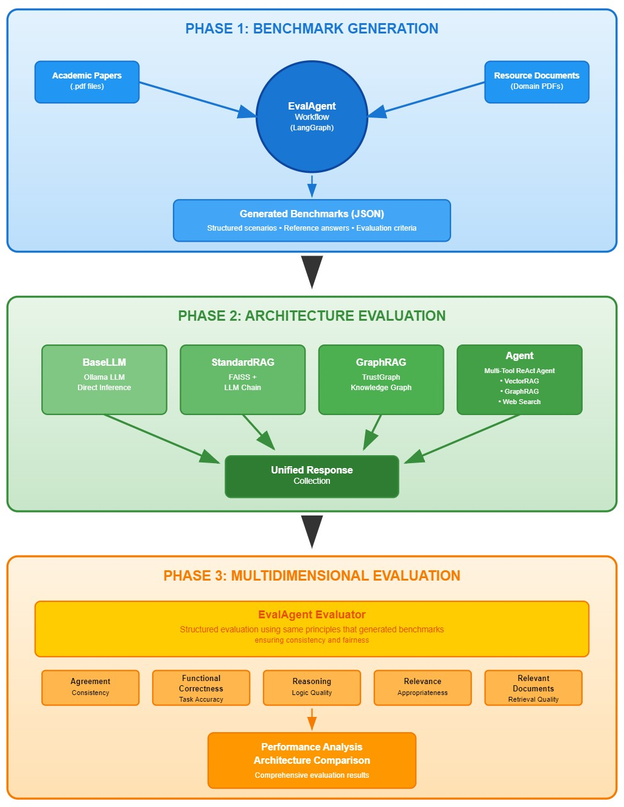
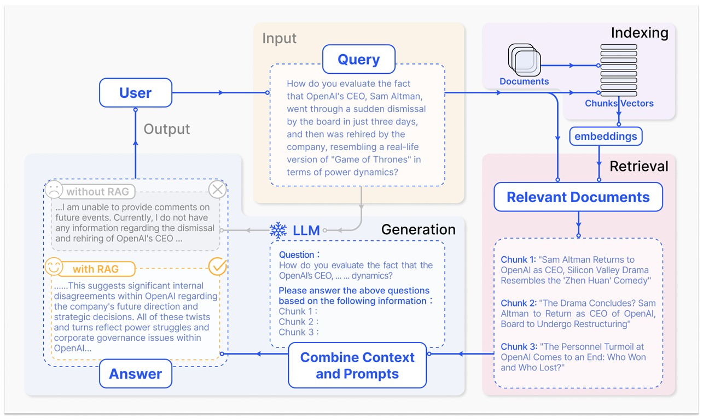
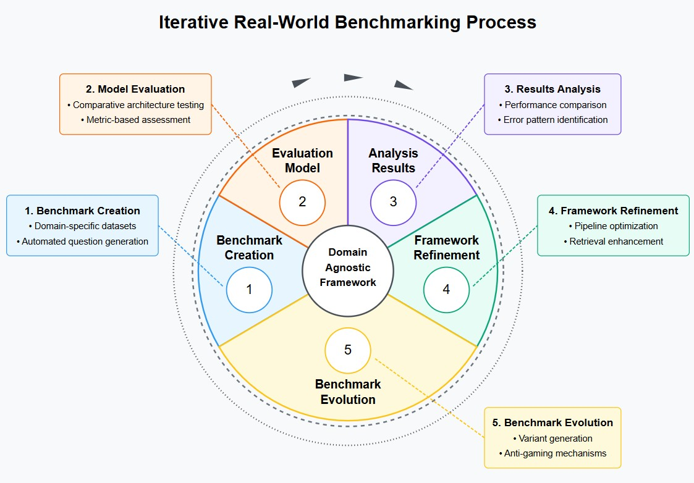
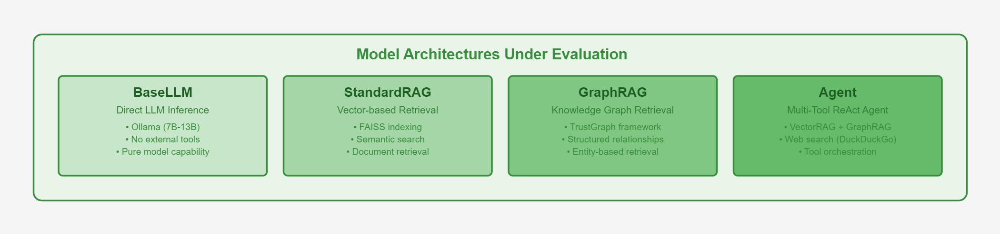
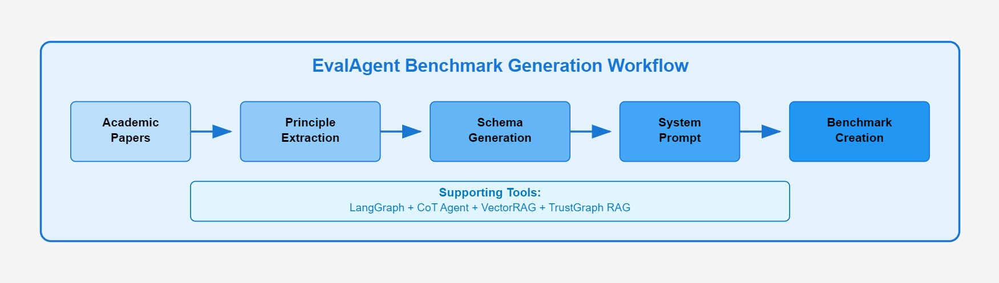
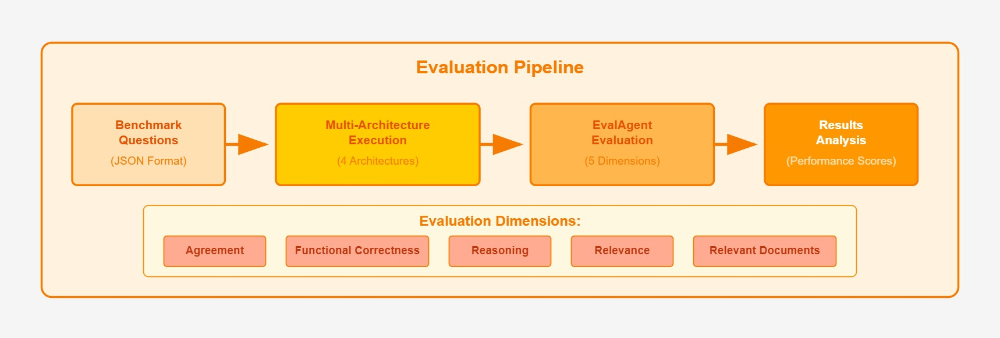

View source code on Github repository.
1 Introduction
1.1 Motivations
Large Language Models (LLMs) have revolutionized natural language processing (NLP), demonstrating remarkable capabilities across diverse domains (McIntosh et al. 2024). Their increasing integration into critical sectors such as healthcare, law, and cybersecurity necessitates rigorous evaluation of their performance (McIntosh et al. 2024). While general benchmarks have contributed to progress, these benchmarks often fail to capture specific requirements crucial to specialized applications, indicating the need for domain-specific evaluation frameworks.
1.2 Problem Statement
Current benchmarking practices face several critical challenges. Benchmark data contamination (BDC), resulting from overlaps between training datasets and test benchmarks, significantly inflates performance metrics and misleads stakeholders about the true capabilities of a model (Golchin and Surdeanu 2024). Many evaluation methods also use probability-based scoring in multiple-choice tests, which inadequately represents the true reasoning and generation capabilities of a model (Lyu, Wu, and Aji 2024). Traditional static benchmarks do not adequately evaluate LLM performance in evolving knowledge domains, as demonstrated by substantial performance declines observed when models are tested against dynamically evolving benchmarks (Xia, Deng, and Zhang 2024).
1.3 Research Questions
This research seeks to answer the following questions:
How can a domain-adaptable LLM benchmarking framework mitigate common evaluation challenges such as data contamination and evaluation method misalignment?
To what extent does retrieval-based augmentation improve LLM performance in specialized tasks?
What multidimensional metrics best capture nuanced performance aspects of LLMs?
How can benchmarks adapt to evolving domain knowledge while maintaining consistent performance evaluation?
1.4 Research Objectives
Aligned with these research questions, the objectives of this study are:
Develop a modular and dynamic benchmarking framework that is adaptable to specialized domains.
Implement and evaluate multiple LLM architectures and augmentation strategies, including retrieval augmentation and knowledge graph integration.
Establish a comprehensive multimetric evaluation approach.
Create mechanisms for continual benchmark evolution to reflect updates in domain knowledge.
1.5 Scope
This research focuses specifically on domain-specific benchmarking frameworks for LLMs demonstrated through cybersecurity compliance advisory tasks, addressing a rapidly evolving and complex knowledge domain. The applicability of this framework to similar specialized domains is also examined.
1.6 Ethical Considerations
Key ethical considerations include the following:
- Potential misinformation risks due to incorrect or misleading model output.
- Transparency regarding known model limitations.
- Fairness of evaluation across diverse domain requirements.
- Privacy concerns addressed through the use of publicly available and synthetic data.
- Mitigating automation bias by emphasizing justification and evidence-supported responses.
1.7 Layout
The dissertation proceeds with a Literature Review examining current practices, emerging frameworks, and some distilled conclusions based on the review; followed by Output Design detailing the methodology, architecture, and evaluation parameters of the proposed framework; and concludes with comprehensive references.
2 Literature Review
2.1 Background
Benchmarking LLMs serves several critical functions. Benchmarks provide a solid basis for performance evaluations of how well LLMs perform across different capabilities such as reasoning, knowledge retrieval, language understanding, etc. They in turn allow researchers to quantify improvements over time and compare different model architectures and training techniques. Organizations can then use benchmark results to inform the appropriate selection of models for specific applications based on their strengths and weaknesses. Benchmarks highlight areas where models struggle, guiding future research efforts. Many benchmarks now include evaluations of harmful outputs, biases, and other safety concerns. Despite their importance and utility, LLM benchmarks face several significant challenges.
Benchmarking LLMs has historically been crucial for measuring progress and comparing models. Standard benchmarks such as General Language Understanding Evaluation (GLUE), SuperGLUE and Massive Multitask Language Understanding (MMLU) provided fixed datasets and tasks to evaluate core NLP capabilities, enabling consistent comparisons between models (McIntosh et al. 2024). These benchmarks focus on end-to-end metrics for tasks such as answering questions, translating, or common-sense reasoning, treating the model as a black box that produces an answer per query. This approach helped quantify improvements and highlight strengths and weaknesses of the model over time. Organizations could use benchmark results to guide model selection for applications and researchers could identify where models struggle to spur future advances. Over time, benchmarks also began to assess ethical and safety dimensions, such as bias and harmful output, to ensure responsible artificial intelligence (AI) development. In short, LLM benchmarks serve as standardized yardsticks for performance, driving the evolution of the field.
However, foundational benchmark practices come with assumptions and limitations. One such assumption is that improvements in model performance on high-profile benchmarks like MMLU, HumanEval, etc., are indicative of the model developing a deeper understanding or acquiring certain abilities. In addition, a common practice in LLM evaluation is using the predicted probabilities of a model to choose answers in tasks, especially multiple-choice questions, instead of letting the model generate an answer in natural language. Many benchmark evaluations, for efficiency, will have the model score each possible answer (option A, B, C, etc.) and pick the highest-probability option as its answer. This method is label-based or probability-based evaluation, as opposed to generation-based evaluation, where the model actually produces an answer, sometimes with an explanation, and that output is checked. The main reason why many current evaluation frameworks default to probability-based scoring is due to computational constraints, namely, it is faster and cheaper to get the probability of a model on a fixed set of answers than to generate text. The assumption is that this method of evaluation serves as a suitable proxy for the behavior of a model in generation-based tasks. Finally, long-standing statistical metrics such as accuracy for classification, F1, precision/recall, BLEU/ROUGE for generation, etc., have provided a way to objectively quantify performance. However, these statistical measures are limited in their ability to properly stratify and score nuanced outputs that often result from real-world application.
A growing trend in LLM research and application is the incorporation of tools, such as Retrieval-Augmented Generation (RAG), to enhance LLM capabilities and accuracy. A RAG system has (1) a retrieval component that fetches documents relevant to the query, and (2) a generation component that produces a final answer using both its internal knowledge and the retrieved context (see Figure 1), with the aim to reducing hallucinations and keeping knowledge up-to-date (Gao et al. 2024, 1). Traditional LLM benchmarks assume that the model’s knowledge and reasoning are self-contained, that the model knows the answer from training or must infer it from a given prompt context. They do not explicitly test the model’s ability to retrieve and use external information, nor do they decompose performance into subtasks. For example, MMLU assesses knowledge across domains with multiple-choice questions, but a model’s score conflates knowledge recall and reasoning, without isolating whether an error was due to lack of information or incorrect reasoning. Similarly, holistic evaluation efforts like Holistic Evaluation of Language Models (HELM) provide diverse metrics (accuracy, calibration, bias, etc.), but still treat the model as a single black-box system producing an answer per query. In short, conventional benchmarks excel at measuring what answer the model gives, but not how it got that answer.

2.3 Conclusions
Examining these works collectively, several common themes emerge with regard to general principles and best practices for domain-specific LLM benchmarks.
2.3.1 Maintaining Benchmark Integrity
A consistent concern is to ensure that the evaluation truly measures generalization, not memory. Xu et al. (Xu et al. 2024)‘s survey highlighted how pervasive this issue is, warning that models often get inflated scores by ’knowing’ test answers in advance. It is important to distinguish that the memorization of the answers is not the problem in question, but can be an indicator of the real issue, which is brittleness and overfitting. Although the mere presence of model memorization does not definitively prove overfitting has occurred benchmarking solutions should be designed to elucidate this issue. Works such as Xia, Deng, & L. Zhang (Xia, Deng, and Zhang 2024)’s EVOEVAL, which regenerates and mutates test questions, show promise in this regard. The general principle made clear in this review is to keep the benchmarks novel and unpredictable. Echoing this theme, McIntosh et al. (McIntosh et al. 2024) advocates for dynamic benchmarks that evolve so that models cannot simply overfit. For domain-specific benchmarks, this might mean using proprietary or freshly collected data that was not in common pre-training corpora, or continuously adding new test cases over time. In doing so, we maintain the integrity of the benchmark, ensuring that the scores remain a trustworthy signal of the capability of a model.
2.3.2 Evolving Evaluation to Reflect Real Usage
There is a clear trend towards making evaluations more holistic, realistic and aligned with how LLMs are actually used. Lyu, Wu, & Aji (Lyu, Wu, and Aji 2024) explicitly show that evaluation methods can be misaligned, if we optimize for convenience like in the case of multiple-choice probability evaluation, we might miss the true behavior of the model. Similarly, McIntosh et al. (McIntosh et al. 2024) and Rasiah et al. (Rasiah et al. 2024) push for benchmarks that test models in more complex scenarios (multi-turn interactions, long documents, diverse languages) because real-world tasks are complex. A general principle is that benchmarks should simulate the conditions under which we expect the model to perform. For instance, if an LLM will be used by non-English speakers, the benchmark should have multilingual components, as SCALE does. If the model will function as a dialogue agent, the benchmark should include interactive prompts or multistep reasoning tasks, not just single-turn queries. We see this in RAGBench and Li, Yuan, & Z. Zhang (Li, Yuan, and Zhang 2024)’s work by incorporating retrieval into the evaluation system. Since many real deployments use tools to assist LLMs, the benchmarks must evaluate that combined system. Another aspect of evolving evaluation is the use of multimetric assessment. Instead of a one-number accuracy or BLEU, there is a move to break down the performance into submetrics such as RAGBench’s TRACe to get a more complete picture. This is especially important in domain-specific contexts like legal or medical, where an answer might need to be not only correct but also justified and safe. By having granular metrics such as correctness, justification adequacy, harmful content check, etc., benchmark results become more actionable, developers can see why a model fails and improve it. In summary, best practices involve designing benchmarks that are high-fidelity proxies for deployment scenarios: dynamic, diverse, and evaluated on multiple axes of quality.
2.3.3 Leveraging Tools and Hybrid Approaches
Another emerging principle is that benchmarks can and should test a model’s ability to use tools or external knowledge, rather than confining the evaluation to end-to-end prompting. Li, Yuan, & Z. Zhang (Li, Yuan, and Zhang 2024) and Friel, Belyi, & Sanyal (Friel, Belyi, and Sanyal 2025) both illustrate this by focusing on retrieval-augmented settings. This intersection of tool-use with benchmarking is increasingly relevant as advanced models often come with an ecosystem of plugins or support systems. A domain-specific example: A cybersecurity LLM might have access to a database of known vulnerabilities; a good benchmark would measure how well the LLM queries that database and integrates the results into its advice, not just what it remembers. By designing benchmarks that allow tool use, for example, providing an API or knowledge base as part of the test environment, we measure a more practical skill, the ability of an AI to know what it does not know and find out. This also helps combat hallucinations and data staleness, as seen in RAG approaches. In intersections, this addresses some contamination issues by relying on an external source rather than training memory. This in turn aligns with the goal of realistic evaluation, since human AI users often expect AI to cite sources or use web search. It is a shift from the old paradigm of closed-book QA towards an open-book evaluation model.
In particular, RAG evaluation highlights the importance of ground truth reference signals for factual tasks. In base LLM evaluation, this insight suggests incorporating open-book testing: instead of only closed-book QA, have benchmarks where the model can consult a knowledge source, as a form of RAG, and see if that boosts performance. If an LLM under closed-book conditions fails a question but succeeds when allowed to retrieve relevant text, that indicates the base model’s limitation was missing knowledge, not reasoning ability. Conversely, if it fails even with the reference provided, the issue lies in understanding or reasoning. This differentiated evaluation, closed-book versus open-book, was historically done in QA research and can be informed by RAG frameworks. Gao et al. (Gao et al. 2024) mention that RAG enables continuous knowledge updates and domain-specific info integration. Evaluating a base model in scenarios with and without such updates can quantify how much retrieval augments it. In summary, by borrowing RAG’s metrics such as faithfulness, relevance, etc., and techniques such as LLM-based judging, multicomponent analysis, we can design more nuanced and robust evaluations for base models. This ensures that enhanced capabilities such as factual grounding are explicitly tested and that a model’s score reflects not just whether it is right, but why and how it arrives at the answers.
3 Output Design
This framework provides a systematic, repeatable, and automated approach to benchmarking advisory LLMs across various domains. By integrating domain-specific knowledge, retrieval augmentation, and knowledge graphs, it ensures robust evaluations that align with real-world application needs. The modular design allows organizations to continuously update their benchmarking pipeline as domain requirements evolve, ensuring that advisory models remain accurate, trustworthy, and effective in real-world deployment. While demonstrated here with a cybersecurity compliance use case, the framework’s architecture is intentionally domain-agnostic. The same methodology can be applied to financial advisory, legal consultation, healthcare guidance, or any other domain requiring specialized knowledge. This flexibility allows organizations to adapt the benchmarking process to their specific needs while maintaining rigorous evaluation standards (see Figure 6).

3.1 Methodologies
To develop an effective cybersecurity compliance advisory benchmarking framework, we employ a structured methodology that ensures real-world relevance and automation. The benchmark is designed around publicly available cybersecurity standards (e.g., NIST 800-53, NIST Cybersecurity Framework (CSF) 2.0, CIS Controls, CSA Cloud Controls Matrix (CCM), GDPR, and MITRE ATT&CK) and focuses on evaluating an LLM’s ability to advise on compliance-related queries. This includes:
Identifying Real-World Advisory Tasks – Defining key use cases such as answering compliance-related questions, identifying gaps, providing policy recommendations, and cross-mapping standards (NIST 2020).
Automating Benchmark Dataset Creation – Extracting and structuring compliance questions from regulatory texts, case law, certification exams, and expert Q&A forums (McIntosh et al. 2024).
Evaluating Multiple Architectures – Comparing base models, fine-tuned models, RAG-enhanced models, and GraphRAG architectures (Xu et al. 2024).
Continuous Refinement and Benchmark Evolution – Preventing benchmark overfitting by generating test variants and monitoring for artificial performance inflation (Xia, Deng, and Zhang 2024). The framework addresses benchmark evolution through three practical mechanisms:
Scheduled Resource Updates: Periodic manual replacement of resource documents with the latest regulatory versions, recognizing that automated detection of domain knowledge evolution represents a complex research problem requiring continuous monitoring of regulatory bodies.
Schema-Preserved Regeneration: Maintaining consistent output schemas while regenerating questions with updated resource documents, producing differently worded questions with the same evaluative content to test genuine understanding versus memorization.
Multi-Model Generation: Using different LLMs (e.g., Gemma2:9b, Llama3.1, GPT-4) with identical schemas and resource documents to create diverse question formulations while ensuring benchmarks are not biased toward specific model families.
3.2 Software
The benchmarking framework is implemented with Docker and Ollama for seamless local model deployment and evaluation (Ollama 2024). Ollama enables running 7B-13B parameter open-source models on consumer GPUs, ensuring cost-effective testing. The TrustGraph framework is used for GraphRAG, leveraging knowledge graphs to enhance retrieval accuracy (TrustGraph 2024). Hugging Face’s “evaluate” library provides standardized performance metrics, while Python-based scripts automate dataset curation, evaluation pipeline execution, and metric tracking. Additional tools include:
- LangGraph – For agent workflow orchestration and state management (LangGraph 2025).
- LangChain – For LLM-based retrieval, response generation, and logging interactions (LangChain 2024).
- FAISS – For vector-based document retrieval in standard RAG configurations (Douze et al. 2025).
- Qdrant – For knowledge graph storage and querying in GraphRAG experiments (Qdrant 2025).
- Pydantic – For dynamic schema generation and structured output validations (Pydantic 2025).
3.3 System
The benchmarking system follows a modular three-phase pipeline (see Figure 7), comparing four LLM configurations (see Figure 8):
- Base LLM - Direct model inference using Ollama (7B-13B open models).
- Standard RAG - Vector-based retrieval augmentation using FAISS indexing.
- GraphRAG - Knowledge graph-based retrieval using TrustGraph framework.
- Agent - Multi-tool ReAct agent combining vector RAG, graph RAG, and web search capabilities.

Each architecture is deployed through a unified interface and evaluated on curated benchmarks of domain-specific queries. The pipeline executes queries across all architectures, retrieves relevant context (for RAG/GraphRAG/Agent models), logs outputs, and calculates performance metrics using the EvalAgent framework.
3.4 Resources
The implementation relies on publicly available compliance datasets and documentation:
- NIST Special Publications (SP 800 series) (NIST 2020)
- NIST Cybersecurity Framework (CSF) 2.0 (NIST 2024)
- CIS Critical Security Controls v8 (CIS 2023)
- FedRAMP Security Controls & Compliance Guidelines (FedRAMP 2023)
- GDPR regulatory text and enforcement case studies (EuropeanCommission 2023)
The system employs an automated EvalAgent framework that processes academic papers to extract evaluation principles, generates domain-specific system prompts, and creates benchmarks through multi-document RAG retrieval from compliance resources (see Figure 9) (Krishna 2024).

3.5 Evaluation Parameters
To measure the success of each implementation, the benchmarking framework (see Figure 10) evaluates models across multiple dimensions:
Agreement – Is there consistency between a model’s predicted probabilities and its ability to generate coherent, relevant, and accurate text? High agreement implies that the model’s probabilistic outputs accurately reflect its generative capabilities across diverse tasks, including those with both definitive solutions and open-ended inquiries (Lyu, Wu, and Aji 2024).
Function Correctness – Does the answer reliably and accurately fulfill the intended function specified in a task or prompt? Does it properly address its real-world intended usage? (Xia, Deng, and Zhang 2024).
Reasoning – Can the model logically justify its recommendations? (Xu et al. 2024).
Relevance – Does the response directly address the compliance question? (Es et al. 2023).
Retrieval Effectiveness (for RAG/GraphRAG) – Are retrieved documents relevant and properly used? (Gao et al. 2024).

Each model is tested on a standardized benchmark and its performance is logged across these metrics. The results are analyzed to determine:
- Which model architecture performs best?
- Does retrieval improve reasoning and accuracy?
- Does GraphRAG reduce hallucinations and improve compliance adherence?
- Are improvements genuine or due to artificial benchmark gaming? (Xia, Deng, and Zhang 2024)
If the best-performing model exhibits benchmark overfitting (e.g., memorization of test questions), the architecture is adjusted, re-tested, and iteratively refined (Rasiah et al. 2024).
3.6 Implementation Workflow
The Domain-Bench framework operates through an integrated workflow that combines automated benchmark generation with systematic architecture evaluation (as shown in the complete framework, Figure 7):
Principle Extraction: Academic papers are processed to extract evaluation criteria using the EvalAgent’s Chain-of-Thought reasoning capabilities.
Benchmark Generation: Domain-specific questions are created through multi-modal RAG, combining vector search and knowledge graph retrieval from compliance resources.
Architecture Evaluation: Each benchmark is executed across all four model configurations, with responses logged and contextualized.
Multidimensional Assessment: The same EvalAgent framework that generated benchmarks evaluates responses across five dimensions, ensuring consistency and fairness.
This end-to-end automation enables scalable, reproducible evaluation while maintaining the flexibility to adapt to evolving domain requirements.